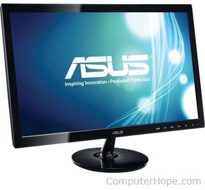
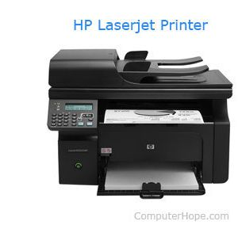
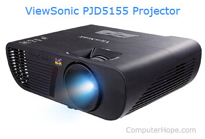
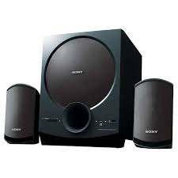
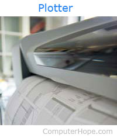

Computers Knowledge
Grow your skills


Output Devices
Computer output devices receive information from the computer, and carry data that has been processed by the computer to the user. Output devices provide data in myriad different forms, some of which include audio, visual, and hard copy media. The devices are usually used for display, projection, or for physical reproduction. Monitors and printers are two of the most commonly-known output devices used with a computer.
Monitor
Printer
Projector
Speaker
Plotter
Monitor

Alternatively referred to as a VDT (video display terminal) and VDU (video display unit), a monitor is an output device that displays video images and text. A monitor is made up of circuitry, a screen, a power supply, buttons to adjust screen settings, and casing that holds all of these components.Like most early TVs, the first computer monitors were comprised of a CRT (cathode ray tube) and a fluorescent screen. Today, all monitors are created using flat-panel display technology, usually backlit with LEDs (light-emitting diode). The image is an example of an ASUS LCD (liquid-crystal display) monitor.
Printer

Alternatively referred to as a VDT (video display terminal) and VDU (video display unit), a monitor is an output device that displays video images and text. A monitor is made up of circuitry, a screen, a power supply, buttons to adjust screen settings, and casing that holds all of these components.Like most early TVs, the first computer monitors were comprised of a CRT (cathode ray tube) and a fluorescent screen. Today, all monitors are created using flat-panel display technology, usually backlit with LEDs (light-emitting diode). The image is an example of an ASUS LCD (liquid-crystal display) monitor.
Projector

A projector is an output device that can take images generated by a computer or Blu-ray player and reproduce them by projection onto a screen, wall, or another surface. In most cases, the surface projected onto is large, flat, and lightly colored. For example, you could use a projector to show a presentation on a large screen so that everyone in the room can see it. Projectors can produce either still (slides) or moving images (videos). A projector is often about the size of a toaster and weighs only a few pounds.
Speaker

A speaker is a term used to describe the user who is giving vocal commands to a software program.
2. A computer speaker is an output hardware device that connects to a computer to generate sound. The signal used to produce the sound that comes from a computer speaker is created by the computer's sound card. The picture shows the Harman Kardon Soundsticks III 2.1 Channel Multimedia Speaker System.
Plotter

Alternatively referred to as a VDT (video display terminal) and VDU (video display unit), a monitor is an output device that displays video images and text. A monitor is made up of circuitry, a screen, a power supply, buttons to adjust screen settings, and casing that holds all of these components.Like most early TVs, the first computer monitors were comprised of a CRT (cathode ray tube) and a fluorescent screen. Today, all monitors are created using flat-panel display technology, usually backlit with LEDs (light-emitting diode). The image is an example of an ASUS LCD (liquid-crystal display) monitor.